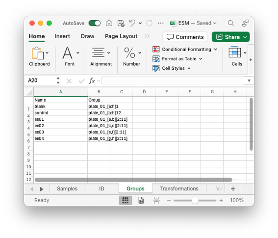

Excel Interface
The Excel interface is accessed through esm template .... It provides an Excel spreadsheet template which can be filled in with information about your data and processing. This is required to create a .esm file from which outputs and views can be produced.
The Excel template features five sheets to be filled out with relevant information:
- Samples
- ID
- Groups
- Transformations
- Views
On this page, we document what is required to be filled out and give examples of how to use the Excel template file.
Samples
The first sheet is called "Samples" and requires information about where you data is stored and what information should be read from it.
Each row specifies a new file that should be imported into the final .esm file.
The first few rows control the naming scheme for the samples. By default this will look something like "plate01a1.600".
The first column lets you put in labels for plates. Here, we have labelled them "1", "2", "3", and "4". The final names for these plates will be "plate01", "plate02", "plate03", and "plate04".
Do they need to be numbers? I am assuming yes since they are written as plate01 not plate1. We probably don't need the "plate" part, maybe autofil plate01, etc if nothing filled in but otherwise do exactly as told, so it would be "1...", 2..." etc in the given example
The second column controls the well name. For example, if you have flow cytometry data from different wells, stored in different .fcs files, you can label the well that each .fcs file corresponds to.
The type defines whether the data is "plate reader", "flow", or "qpcr" and how that file should be imported.
The data location gives the full filepath to the data.
Channels identifies the specific channels that you would like to save in the ESM file. If left blank, then all will be saved.
Finally, we have the plate reader brand. This identifies the format the data will be in. Available options are: "spectramax", "biotek", and "tecan". Leave it blank for other data types.

ID
Here you can rename any channels. On the left, provide the channel name, as specified on the previous sheet. On the right, provide the new name for the channel. In this example, rather than using "plate01a5.600", we would then use "plate01a5.od".

Groups
In this sheet, you can group samples together. For example, you may want to group all of your blank well together to make them easier to refer to.
There are a few formats for doing this. The simplest is to just write out all the samples in a comma separated list (i.e. "plate01a1, plate01a2, plate01a3").
To make this a bit shorter, you may choose to use the compressed format. In this format, anything specified in [] is expanded.
[b:d]gets expanded tob,c, andd.[b:2:f]gets expanded tob,d, andf(step of 2).[a,d,e]gets expanded toa,d, ande.- Numerals are treated likewise.
All these formats can be mixed together in any combination, so "plate0[1,2][a:c]1, plate04a2" is treated the same as "plate01a1, plate01b1, plate01c1, plate02a1, plate02b1, plate02c1, plate04a2".
ESM.expand_group — Functionexpand_group(group::AbstractString)Expand a condensed group name into the sample IDs it contains. For example, if the group is "plate0[1,2][a:c]2", it will return all sample IDs from plate 1 to 2 and wells a2, b2, and c2.
Args:
group::AbstractString: The group name to expand.
Returns:
Vector{String}: A vector of sample IDs contained in the group.
In the example:
- all wells on the left of a 96 well plate (A through H, column 1) are grouped as "blank",
- all wells on the right (A through H, column 12) are groups as "control",
- the remaining wells (A through H, columns 2 through 11) are split into pairs of rows (A and B, C and D, E and F, G and H) into the groups "ee01", "ee02", "ee03", "ee04".

Transformations
On the transformations sheet, you can define the post-processing you want to apply to your data. This typically involves calibrations and calculating summary statistics.
In the left column, you can name your transformation. In the right column, you can provide the code for the transformation you want to run. This can be arbitrary Julia code, but most commonly is just calling one of the ESM methods for Plate Reader, Flow Cytometry, and qPCR data.
In the example below, we calibrate our groups based on the blank group, then calculate growth rates on each of the calibrated transformations. Finally, the data is collected together (the "processed" variable appends the different DataFrames together) and this is normalised by the mean of the controls.

Views
Finally, the views describe a subset of transformations, groups and samples that you actually want to look at, outside of ESM. This is typically used for your final post-processed data, but can also be useful for debugging (viewing inputs and outputs from a transformation to make sure it is working as intended).
In the example below, we have a single view named "growth_rate", which uses the "normalized" transformation we defined previously. Instead of using a transformation, we could have also used a group name, or a sample name.